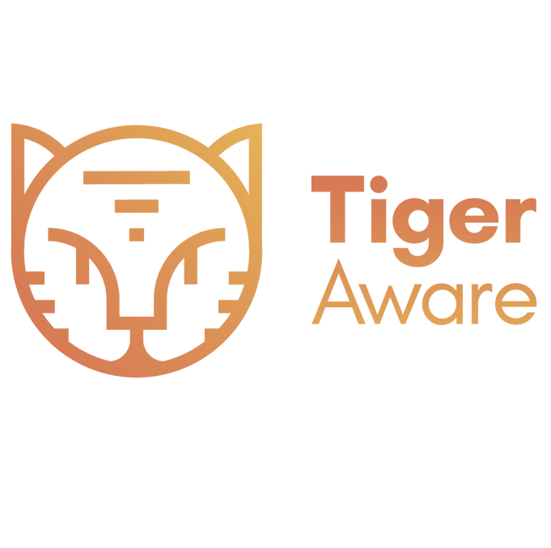

<div class="section" id="reference">
        <div class="container cc-reference">
          <div class="h4 mb-4 text-center title">References</div>
          <div class="card" data-aos="zoom-in">
            <div class="carousel slide" id="cc-Indicators" data-ride="carousel">
              <ol class="carousel-indicators">
<!--                <li class="active" data-target="#cc-Indicators" data-slide-to="0"></li>-->
<!--                <li data-target="#cc-Indicators" data-slide-to="1"></li>-->

              </ol>
              <div class="carousel-inner">
                <div class="carousel-item active">
                  <div class="row">
                    <div class="col-lg-2 col-md-3 cc-reference-header">
                      <a href="https://tigeraware.com/" target="_blank">
                        
                      </a>
                    </div>
                    <div class="col-lg-10 col-md-9 container">
                    <p>
                      TigerAware is a cross-platform system for collecting information from participants in real life over time. Though the system is inspired by applications in Ecological Momentary Assessment (EMA), it can be used in research studies spanning many domains. This includes the social and medical sciences (including psychological studies on emotion, behavior, and substance use), campus climate tracking, and pharmaceutical trials.
                    </p>
                    </div>
                  </div>
                </div>
<!--                <div class="carousel-item">-->
<!--                  <div class="row">-->
<!--                    <div class="col-lg-2 col-md-3 cc-reference-header">-->
<!--                      -->
<!--                      <h4>Hetal </h4>-->
<!--                      <p class="category">Associate S/W Developer,</p>-->
<!--                      <p class="category">at Sygnet</p>-->
<!--                    </div>-->
<!--                    <div class="col-lg-10 col-md-9">-->
<!--                      <p> Mehul is a really good working partner with high knowledge on backend and frontend development ,-->
<!--                        he is always concerned with going forward never afraid of improving or making use of new technologies,-->
<!--                        helping his peers whenever-->
<!--                         he is able to and solving problems in a quick and efficient manner with his typical optimism</p>-->

<!--                         <p>We have worked two years togather in same project ,so i know him from my personal experience-->
<!--                           Every person want this guy to be in his team.And as a persona I m sure company wont regret for hiring him-->
<!--                         </p>-->
<!--                    </div>-->
<!--                  </div>-->
<!--                </div>-->


              </div>
            </div>
          </div>
        </div>
      </div>
